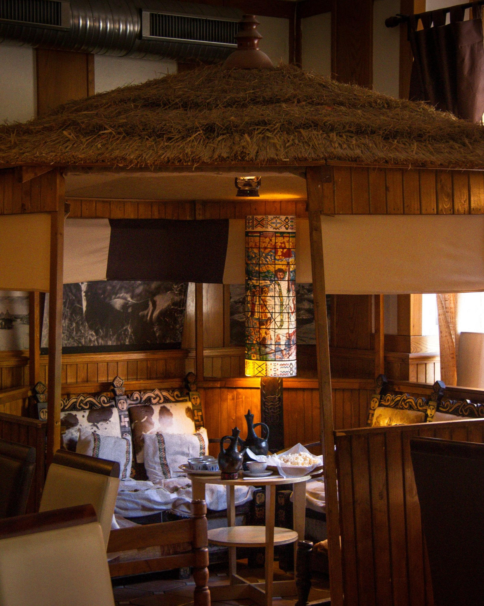
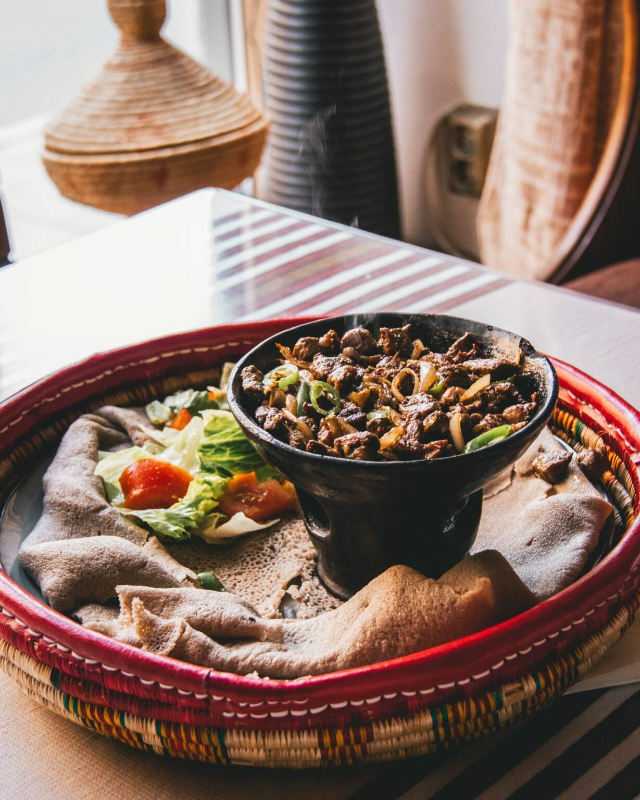
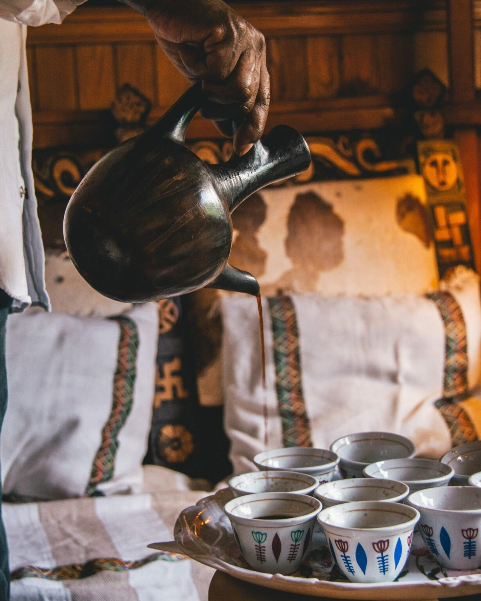

Beyeaynetu
En blandning av starka och milda grytor med kyckling, nötkött, vegetariska rätter, keso och sallad. Serveras med husets injera.
234:-

Ringvägen 161 · Skanstull
Injera, långkokta grytor och en varm etiopisk mattradition – serverad för att upptäckas tillsammans.
Hos Gojo är måltiden lika mycket gemenskap som mat.
Här delas maten från stora fat och injera används för att plocka upp grytor, grönsaker och kryddiga såser. Det är ett sätt att äta som bjuder in till samtal, närhet och lite mindre vardag.
Smakerna rör sig mellan milt, aromatiskt och ordentligt kryddigt. För den som är nyfiken på etiopisk mat är blandade fat ett enkelt sätt att upptäcka flera rätter på samma gång.


Injera är ett traditionellt etiopiskt bröd med mjuk, porös struktur och lätt syra. Det bakas traditionellt med teff och fungerar både som bas på fatet och som det du använder för att äta. Riv av en bit, vik den och plocka upp grytan – bestick behövs inte.
Läs om Gojo & injera
“Genuint rakt igenom ❤️”
“The service was great and we had a really nice time.”
“I really enjoyed the variety of flavors.”